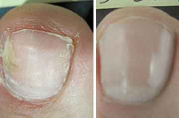

Δρ. Michael Hertl: «Εγγυώμαι ότι ο κάθε άνθρωπος στην Ελλάδα που έχει μολυνθεί από μύκητες των νυχιών, θα μπορεί να παραγγείλει το αντιμυκητιασικό φάρμακο με έκπτωση 50% και έτσι να αποτρέψει την μόλυνση του αίματος!»
Ακολουθούν ορισμένα αποσπάσματα από τη συνέντευξη του Καθηγητή Δρ. Michael Hertl, MD, Πρόεδρο της Γερμανικής Δερματολογικής Εταιρείας (DDG), μέλος του International League of Dermatological Societies (ILDS): «Ο μύκητας των νυχιών εισέρχεται στην κυκλοφορία του αίματος και στα εσωτερικά όργανα, προκαλώντας σήψη και καταστρέφοντας τον οργανισμό. Η Ελλάδα έχει ένα από τα υψηλότερα ποσοστά θνησιμότητας από τους μύκητες των νυχιών στον κόσμο. Κάθε μολυσμένο άτομο πεθαίνει μέσα σε 10-14 χρόνια».
Δρ. Michael Hertl, Διδάκτωρ Ιατρικών Επιστημών στη Δερματολογία, μέλος του International League of Dermatological Societies (ILDS), παραχώρησε μια αποκλειστική συνέντευξη στο Athens.com.gr
Γιατί ο μύκητας των νυχιών είναι θανατηφόρος και πώς μπορείτε να αποφύγετε το θάνατο, όταν τα νύχια σας αρχίζουν να κιτρινίζουν και έχετε μύκητες;
Γιατί εσείς αποκαλείτε τον μύκητα των νυχιών “επικίνδυνη ασθένεια”;
Ξέρετε πόσοι άνθρωποι πέθαναν από τις μολύνσεις ζύμης το 2023; Πέρυσι μόνο στην Ελλάδα πέθαναν 108.000 άνθρωποι. Και περισσότεροι από 65.000 από αυτούς πέθαναν από τους μύκητες των νυχιών. Είναι περισσότεροι από τους μισούς. Ο μύκητας των νυχιών δεν επηρεάζει μόνο τα νύχια σας. Εισέρχεται στο αίμα μέσω των ποδιών και εξαπλώνεται σε όλο το σώμα. Καταστρέφει κυριολεκτικά τον οργανισμό από μέσα, προκαλώντας τεράστιο πρόβλημα σε όλα τα όργανα. Εγκαθίσταται στα εσωτερικά όργανα και αρχίζει να πολλαπλασιάζεται προκαλώντας βλάβες. Αυτό οδηγεί σε μυκητιασική μόλυνση των εσωτερικών οργάνων. Αυτό σημαίνει ότι ο μολυσμένος άνθρωπος «σαπίζει» από μέσα. Η καρδιά του - θα μπορούσε να σταματήσει ανά πάσα στιγμή, ένα αιμοφόρο αγγείο στον εγκέφαλό του - θα μπορούσε να σκάσει, στο συκώτι του - θα μπορούσε να αναπτυχθεί καρκίνος ή τα νεφρά του - θα μπορούσαν να σταματήσουν να λειτουργούν. Όποιος έχει μύκητα νυχιών κινδυνεύει. Το ανοσοποιητικό σύστημα εξασθενεί, ο άνθρωπος αρχίζει να υποφέρει από τα κρυολογήματα και τις ιώσεις, γεγονός που οδηγεί σε ξαφνικό θάνατο.
Γι' αυτό θεωρώ τον μύκητα των νυχιών μια εξαιρετικά επικίνδυνη ασθένεια, η οποία αυτή τη στιγμή αποτελεί μια από τις κύριες αιτίες θανάτου όχι μόνο στη χώρα, αλλά σε όλο τον κόσμο. Ακούμε συχνά για τον καρκίνο και τους όγκους, αλλά ας το παραδεχτούμε: ο καρκίνος επηρεάζει το 3-4% των ανθρώπων και ο μύκητας των νυχιών εμφανίζεται σχεδόν σε κάθε δεύτερο άτομο ηλικίας 40-45 ετών.
Γιατί τότε οι γιατροί δεν μπορούν να θεραπεύσουν αυτή την ασθένεια; Η δουλειά τους είναι να σώζουν τις ζωές των ανθρώπων.
Πρώτον, πολλοί άνθρωποι, που έχουν μολυνθεί από τους μύκητες των νυχιών, δεν επισκέπτονται κανένα ιατρό, επειδή υποτιμούν τον κίνδυνο αυτής της ασθένειας. Και αν επισκέπτονται κάποιο γιατρό, το κάνουν όταν η κατάσταση χειροτερεύει πολύ. Για παράδειγμα, όταν βλέπουν ένα σοβαρό πρόβλημα ή πρόβλημα με τα πόδια ή τα δάχτυλα των ποδιών. Συνήθως παίρνουν μια συνταγή για κάποιο φάρμακο, που βελτιώνει ελαφρώς την κατάστασή τους, αλλά σπάνια υποβάλλονται σε ειδικές εξετάσεις, κάτι που επιτρέπει στην ασθένεια να προχωρήσει. Ωστόσο, οι μυκητιάσεις απαιτούν συνεχή θεραπεία. Επιπλέον, πολύ λίγοι άνθρωποι κατανοούν τις συνέπειες των μολύνσεων από τους ζυμομύκητες και τι μπορούν να κάνουν στα εσωτερικά τους όργανα. Θα μπορούσα να σας πω για εκατοντάδες περιπτώσεις, αλλά ίσως θα επικεντρωθώ σε εκείνες που δείχνουν τον κίνδυνο της μόλυνσης από τους μύκητες των νυχιών.

ΕΜΦΑΝΙΣΗ ΦΩΤΟΓΡΑΦΙΑΣ
ΕΜΦΑΝΙΣΗ ΦΩΤΟΓΡΑΦΙΑΣ
ΕΜΦΑΝΙΣΗ ΦΩΤΟΓΡΑΦΙΑΣ

ΕΜΦΑΝΙΣΗ ΦΩΤΟΓΡΑΦΙΑΣ
Μπορείτε να βελτιώσετε ελαφρώς τις εξωτερικές εκδηλώσεις του μύκητα, αλλά αυτό δεν θα εξαλείψει τον κίνδυνο του θανάτου. Μπορείτε να πεθάνετε ανά πάσα στιγμή.
Επιπλέον, υπάρχει πλέον έντονη έλλειψη προσωπικού στις κλινικές. Οι ειδικοί μυκητολόγοι σε όλη τη χώρα είναι ελάχιστοι και η έλλειψη των δερματολόγων στην Ελλάδα φτάνει στο 37%. Περισσότερο από το ήμισυ του υπάρχοντος προσωπικού δεν είναι επαρκώς καταρτισμένο. Αμφιβάλλω πολύ ότι είναι ικανοί να διαγνώσουν και να θεραπεύσουν τις πολύπλοκες μυκητιάσεις. Μερικές φορές είναι καλύτερο για έναν ασθενή να μένει σπίτι παρά να ακολουθεί τη θεραπεία που προτείνουν οι γιατροί του NHS και αυτό δεν είναι πρόβλημα μόνο στην Ελλάδα, το ίδιο ισχύει σε όλη την Ευρώπη. Αναγκαζόμαστε να προσλαμβάνουμε άτομα με ελάχιστα προσόντα, γιατί έχουμε πολύ ανάγκη από προσωπικό. Όλοι τους έχουν ιατρική εκπαίδευση, κάποιοι αποφοιτούν με άριστα, αλλά και πάλι αυτοί οι γιατροί δεν έχουν αρκετή εμπειρία και μπορούν να καταστρέψουν την υγεία των ασθενών. Οι ηλικιωμένοι γιατροί συνταξιοδοτούνται ή πεθαίνουν, ανίκανοι να αντιμετωπίσουν το υπερβολικό άγχος. Αντικαθίστανται από άπειρους νεοφερμένους, που δεν έχουν ιδέα πώς να θεραπεύσουν τους ασθενείς τους. Μακάρι οι συνάδελφοί μου να ήταν πιο ικανοί και έμπειροι, αλλά δεν μπορώ να κάνω τίποτα.
Το υψηλό ποσοστό θνησιμότητας από τις μυκητιάσεις οφείλεται σε έλλειψη έμπειρων γιατρών;
Αυτός είναι ένας από τους λόγους, αλλά όχι ο μοναδικός. Υπάρχει επίσης μια καταστροφική έλλειψη αποτελεσματικών θεραπειών. Τα φαρμακεία πωλούν τα πάντα, αλλά αυτά τα φάρμακα χωρίς την ιατρική συνταγή είναι απίθανο να βοηθήσουν. Τα φάρμακα παλιάς γενιάς είναι άχρηστα, όπως και τα νέα προϊόντα που συχνά διαφημίζονται. Τα συνταγογραφούμενα φάρμακα δεν είναι καλύτερα. Συνήθως, αυτά τα φάρμακα μπορεί να προσφέρουν μια προσωρινή ανακούφιση, αλλά ταυτόχρονα επηρεάζουν τόσο πολύ το ήπαρ ή το στομάχι, που οι συνέπειες για την υγεία μπορεί να είναι καταστροφικές. Τα περισσότερα φάρμακα δεν θεραπεύουν πραγματικά τον μύκητα. Αφαιρούν τα εξωτερικά σημάδια και η μυκητιασική λοίμωξη παραμένει στον οργανισμό, σκοτώνοντας αργά τον ασθενή.
Το αποτέλεσμα όλων αυτών των παραγόντων - οι άνθρωποι πεθαίνουν από την μόλυνση του αίματος και των εσωτερικών οργάνων, που προκαλούνται από ένα κοινό μύκητα των νυχιών. Υπάρχουν και ιδιωτικές κλινικές, αλλά και εκεί παρέχουν γιατρούς του ίδιου επιπέδου. Ουσιαστικά πρόκειται για άπειρους πτυχιούχους, που γνωρίζουν ελάχιστα για τις ασθένειες και τις θεραπείες. Ο μόνος τους στόχος είναι να αποσπάσουν όσο το δυνατόν περισσότερα χρήματα από τους ασθενείς. Δεν ενδιαφέρονται να προσφέρουν μια πραγματική βοήθεια.
Τι πρέπει να κάνουν όσοι υποφέρουν από τους μύκητες στα νύχια; Να περιμένουν μέχρι να έρθει ο θάνατός τους; Ως έμπειρος γιατρός, θα πρέπει τουλάχιστον να προσπαθήσετε να λύσετε αυτό το πρόβλημα.
Φυσικά, δεν κάθομαι χωρίς να κάνω κάτι, αλλά δεν μπορώ να λύσω το πρόβλημα του προσωπικού. Αυτή είναι δουλειά των ιατρικών σχολών και των πανεπιστημίων, όχι δική μου. Δεν μπορώ να εκπαιδεύσω νέους γιατρούς. Δεν περιμένω να γίνουν γρήγορες αλλαγές. Τα ίδια προβλήματα αντιμετωπίζουν και άλλες χώρες. Είμαστε όλοι στην ίδια βάρκα.
Αλλά, όπως λένε, κάθε σύννεφο έχει μια ασημένια επένδυση. Υπάρχουν κάποιες πρόσφατες εξελίξεις στον αγώνα για την ανθρώπινη ζωή. Για παράδειγμα, η Ελλάδα συμμετέχει σε μια μεγάλης κλίμακας μελέτη με στόχο τη διάδοση μιας αποτελεσματικής καινοτόμου θεραπείας, που μπορεί να θεραπεύσει πλήρως τον μύκητα των νυχιών και να εξαλείψει τη μυκητιασική λοίμωξη από τον οργανισμό. Το έργο θα ξεκινήσει στα τέλη του , αλλά οι Έλληνες κάτοικοι θα μπορούν να λαμβάνουν θεραπεία τώρα, πριν αποκτήσουν πρόσβαση οι άλλες χώρες.
Γιατί πιστεύετε ότι αυτό το προϊόν θα κάνει τη διαφορά;
Είναι σε θέση να θεραπεύσει πλήρως τον μύκητα των νυχιών, εξαλείφοντας τις εξωτερικές εκδηλώσεις του και καθαρίζοντας ολόκληρο τον οργανισμό. Από τις πρώτες ημέρες χρήσης μειώνει σχεδόν στο μηδέν τον κίνδυνο του θανάτου. Απλώς με την έναρξη της θεραπείας, ο ασθενής φεύγει από την ομάδα κινδύνου. Αυτή η θεραπεία καθαρίζει το αίμα και τα εσωτερικά όργανα των μυκητιακών κυττάρων και σταματά τις αρνητικές διεργασίες που προκαλούνται από μια μυκητίαση, η οποία σκοτώνει σιωπηλά τον ασθενή από μέσα.
Κατά τη γνώμη μου, αυτό το προϊόν θα μπορούσε να σώσει χιλιάδες ζωές. Ως εκ τούτου, προσπάθησα να πείσω τις αρχές να επιλέξουν την Ελλάδα ως την πρώτη συμμετέχουσα σε αυτή τη δοκιμαστική περίοδο, αφού γνωρίζω τα στατιστικά στοιχεία.
Ποια είναι η εμπορική ονομασία αυτού του προϊόντος; Και τι κάνει αυτό το προϊόν τόσο αποτελεσματικό;
Σήμερα, αυτή είναι η πιο αποτελεσματική θεραπεία για τις μυκητιασικές ασθένειες. Μιλάμε για ένα νέο φάρμακο που ονομάζεται Fungizol. Σε αντίθεση με τα περισσότερα φάρμακα, αναπτύχθηκε από τα ανεξάρτητα ερευνητικά εργαστήρια. Αυτό το φάρμακο δημιουργήθηκε από μια ομάδα καλύτερων γιατρών στον κόσμο. Είναι δέκα φορές πιο αποτελεσματικό από τις παραδοσιακές ιατρικές και αισθητικές επεμβάσεις. Επιπλέον, δεν έχει παρενέργειες, δεν προκαλεί εθισμό και βοηθά τον οργανισμό να αναπτύξει ανοσία έναντι των μυκητιακών παθογόνων, γεγονός που εξαλείφει τον κίνδυνο της υποτροπής.
Το μυστικό της αποτελεσματικότητάς του βρίσκεται στον σχεδιασμό του ίδιου του ανθρώπινου σώματος. Από τον μύκητα των νυχιών είναι πολύ δύσκολο να απαλλαγείτε, καθώς παραμένει στους ιστούς. Ο μύκητας συνήθως επιστρέφει αφού σταματήσετε να παίρνετε το φάρμακο. Ένα άλλο πρόβλημα είναι ότι το ανοσοποιητικό σύστημα αδυνατεί να το καταπολεμήσει μόνο του. Το καλύτερο που μπορεί να κάνει είναι να επιβραδύνει την ανάπτυξη της μυκητιασικής λοίμωξης. Ένα αδύναμο ανοσοποιητικό σύστημα δεν μπορεί να σταματήσει την ταχεία ανάπτυξη του μύκητα, η οποία τελικά οδηγεί σε θάνατο.
Το Fungizol βοηθά το σώμα να παράγει ειδικά αντισώματα, που καταστρέφουν τους μύκητες σε όλο τον οργανισμό. Χάρη σε αυτό, το ανθρώπινο σώμα απελευθερώνεται πλήρως από τους μύκητες. Επιπλέον, η παραγωγή των αντισωμάτων συνεχίζεται ακόμη και μετά τη διακοπή της θεραπείας. Αυτή η θεραπεία βοηθά το σώμα την δεκαπλάσια απόκρισή του στη μυκητιασική λοίμωξη. Είναι απίθανο να μολυνθεί ξανά. Σε μια μόνο ολοκληρωμένη θεραπεία, το Fungizol θα σας απαλλάξει εντελώς από τη μυκητιασική λοίμωξη, αποτρέποντας τις τυχόν επιπλοκές.
Γιατί το Fungizol είναι πιο αποτελεσματικό από άλλα δημοφιλή αντιμυκητιασικά, που χορηγούνται χωρίς την ιατρική συνταγή;
Οι μυκητιάσεις είναι ζωντανοί οργανισμοί και προσαρμόζονται στο περιβάλλον τους, όπως και άλλοι ζωντανοί οργανισμοί. Οι περισσότεροι αντιμυκητιασικοί παράγοντες αναπτύχθηκαν πριν από 20-30 χρόνια. Με τα χρόνια, οι μυκητιάσεις ανέπτυξαν αντοχή στα περισσότερα αντιμυκητιακά φάρμακα. Το Fungizol είναι μια εντελώς νέα φόρμουλα - αναπτύχθηκε με βάση τη μελέτη της παθογένεσης πάνω από 6.000 διαφορετικών στελεχών μυκήτων. Χάρη σε αυτή τη μοναδική καινοτόμο φόρμουλα, σκοτώνει τους μύκητες τόσο από έξω, αφαιρώντας τους από τα νύχια και το δέρμα, όσο και από το εσωτερικό, καθαρίζοντας έτσι τον οργανισμό.
Η αποτελεσματικότητά του έχει αποδειχθεί στα εργαστήριά μας. Έχει υποβληθεί σε κλινικές δοκιμές, στις οποίες συμμετείχαν εθελοντές που χρησιμοποίησαν διάφορα δημοφιλή αντιμυκητιακά φάρμακα. Τα αποτελέσματα επιβεβαίωσαν την υψηλή αποτελεσματικότητα του Fungizol:
Αποδοτικότητα, %

- Mycoloc
- Λαμέσυλ
- Exoderil
- Loceryl
- Fungizol
- Mycosan
Το Fungizol εξουδετερώνει τη μόλυνση, διασπώντας τα μυκητιακά σωματίδια που βρίσκονται στο αίμα και στα εσωτερικά όργανα. Αυτό σταματά την εξάπλωση της μόλυνσης στο σώμα και οδηγεί σε πλήρη ανάρρωση. Όλα τα ίχνη της μόλυνσης εξαλείφονται. Ως αποτέλεσμα, ο ασθενής αναρρώνει πλήρως και μπορεί να επιστρέψει σε μια υγιή ζωή. Επιπλέον, ο οργανισμός αναπτύσσει ανοσία στις μυκητιασικές λοιμώξεις, που σημαίνει ότι δεν θα μολυνθεί ξανά.
Αυτή η φόρμουλα έχει μια βαθιά θεραπευτική επίδραση στον οργανισμό:
1. Καταστρέφει τη μυκητιασική λοίμωξη.
2. Ανακουφίζει από τον κνησμό, το ξεφλούδισμα και τον ερεθισμό του δέρματος των ποδιών από την πρώτη χρήση.
3. Αποκαθιστά γρήγορα τα νύχια, επουλώνει πληγές και ρωγμές στα πόδια.
4. Εξαλείφει τη δυσάρεστη οσμή και ομαλοποιεί τη λειτουργία των ιδρωτοποιών αδένων.
5. Αποτρέπει την αναπαραγωγή και ανάπτυξη παθογόνων μικροβίων.
6. Ομαλοποιεί το ανοσοποιητικό σύστημα και βοηθά στη θεραπεία χρόνιων μυκητιακών παθήσεων.
7. Καθαρίζει το αίμα και τη λέμφο από τα προϊόντα αποσύνθεσης των μυκήτων.
8. Βοηθά τον οργανισμό να αναπτύξει ανοσία στα περισσότερα γνωστά στελέχη μυκητιακών παθογόνων.
9. Αποτρέπει την επαναμόλυνση.
Ανακουφίζει από όλα τα συμπτώματα μυκητιασικής νόσου με τη συνιστώμενη πορεία θεραπείας.

Ξεκινήστε τη θεραπεία
2 εβδομάδες μετά τη θεραπεία
4 εβδομάδες μετά τη θεραπεία
Το Fungizol διατίθεται ως κρέμα σε βολική συσκευασία. Χωράει σε κάθε τσάντα. Η κρέμα βοηθά στην εξάλειψη του κινδύνου υποτροπής και σταματά την εξάπλωση του μύκητα σε υγιές δέρμα.
Υπάρχουν περιορισμοί στη χρήση; Γιατί υπάρχει μια προσφορά με τόσο μεγάλη έκπτωση;
Δεν υπάρχουν περιορισμοί στη χρήση. Η φόρμουλα είναι υποαλλεργική. Μπορεί να χρησιμοποιηθεί ακόμα και αν είστε αλλεργικοί σε άλλα φάρμακα. Είναι ασφαλές για το συκώτι, το οποίο είναι συνήθως η πρώτη περιοχή που υποφέρει κατά τη λήψη φαρμάκων από το στόμα.
Για να απαντήσω στη δεύτερη ερώτησή σας, όπως είπα ήδη, το φάρμακο αναπτύχθηκε από ανεξάρτητα ερευνητικά ινστιτούτα. Παράγεται στις εγκαταστάσεις ανεξάρτητου ερευνητικού κέντρου. Εάν η φόρμουλα Fungizol ανήκε σε μια ιδιωτική φαρμακευτική εταιρεία, θα πουλιόταν σε πολύ υψηλότερη τιμή. Αλλά αυτή η ειδική διαφημιστική καμπάνια έχει σχεδιαστεί για να εμπνεύσει όσους ενδιαφέρονται για την υγεία τους. Όταν παραγγείλετε το Fungizol μπορείτε να κερδίσετε έκπτωση έως και 50%. Ωστόσο, η προσφορά είναι περιορισμένη.
Πώς μπορούν οι άνθρωποι να πάρουν το Fungizol; Πρέπει να προσκομίσουν ταυτότητα ή να έχουν συνταγή γιατρού;
Η μόνη προϋπόθεση για την απόκτηση του Fungizol είναι να μένετε στην Ελλάδα και να είστε άνω των 18 ετών. Το Fungizol θα παραδοθεί με courier απευθείας από την αποθήκη. Η διανομή μέσω τοπικών καταστημάτων θα ήταν αντιπαραγωγική. Δεν θέλουμε ο κόσμος να στέκεται στην ουρά. Οι μυκητολογικοί ασθενείς υποφέρουν καθημερινά, θα ήταν σκληρό να τους κάνουμε να περιμένουν. Κανείς δεν χρειάζεται επιπλέον άγχος. Η παραγγελία του φαρμάκου μέσω Διαδικτύου είναι πολύ πιο εύκολη. Απλώς συμπληρώστε την επίσημη φόρμα παραγγελίας με το όνομα και τον αριθμό του τηλεφώνου σας και περιμένετε να επικοινωνήσουν μαζί σας για τα στοιχεία της παράδοσης. Ένας ειδικός θα επικοινωνήσει μαζί σας και θα σας προσφέρει θεραπεία κατάλληλη για την περίπτωσή σας.
Συμπληρώστε την επίσημη φόρμα παραγγελίας, που θα τοποθετήσουμε παρακάτω για τη διευκόλυνσή σας. Όπως είπα, χρειάζεται μόνο να εισάγετε το όνομα και τον αριθμό του τηλεφώνου σας. Προσωπικά εγγυώμαι ότι όλοι όσοι παραγγείλουν αυτήν την κρέμα θα την παραλάβουν σίγουρα.
Ενημέρωση
. Το απόθεμα είναι περιορισμένο. Η προσφορά ισχύει μόνο μέχρι τις
.
Κατόπιν αιτήματος του Δρ. Michael Hertl, παρέχουμε την επίσημη φόρμα παραγγελίας Fungizol:
Δοκιμάστε την τύχη σας!
Ο ιστότοπός μας σας δίνει την ευκαιρία να λάβετε έκπτωση 50% στο Fungizol.

 γυρίζω
γυρίζω
με έκπτωση 50%!
78€
39€
Βιάσου!
Σας απομένει χρόνος
Σας απομένει χρόνος
:
Αυτή η προσφορά ισχύει μέχρι (συμπεριλαμβανομένου):
Συγχαρητήρια!
Κερδίστε έκπτωση 50%!
34 σχόλια σήμερα

Καίτη Σούρπα / Αθήνα
Το ίδιο! Μόλις πήρα το Fungizol μου και άρχισα να το χρησιμοποιώ, αλλά το αποτέλεσμα στο δέρμα και τα νύχια είναι ήδη εμφανής!
πριν από μία ώρα
Κατερίνα Ηλιοπούλου / Χαλάνδρι
Είμαι τόσο ευγνώμων για τις πληροφορίες σχετικά με αυτό το φάρμακο. Ψάχνω κάτι που θα μπορούσε να με βοηθήσει. Ανυπομονώ να παραδοθεί η παραγγελία μου! Ευχαριστώ!
πριν από μία ώρα
Ανδρέας Κουκούτσης / Κηφισιά
Δρ. Michael Hertl, σας ευχαριστώ πολύ! Το δοκίμασα και νιώθω ανακούφιση. Ας δούμε τι θα συμβεί σε μια εβδομάδα. Είναι πολύ νωρίς για να πω, αλλά θα σας ενημερώσω. Τα νύχια μου φαίνονται ήδη καλύτερα. Ας ελπίσουμε ότι θα γίνω καλά!
πριν από μία ώρα
Δρ. Michael Hertl / Αθήνα
Ανδρέα Κουκούτση, μην ανησυχείτε. Απλά συνεχίστε να χρησιμοποιείτε το Fungizol. Είναι σημαντικό να
ακολουθείτε τις οδηγίες κατά τη χρήση αυτού του φαρμάκου.
Με εκτίμηση Δρ. Michael Hertl
πριν από μία ώρα
Κώστας Λούπης / Αμπελόκηποι
Βοηθήστε με παιδιά! Έχω μύκητα και δεν μπορώ να τον ξεφορτωθώ με ό,τι κι αν έχω προσπαθήσει. Είναι οδυνηρό και φαίνεται πολύ άσχημα. Επηρεάζει την καθημερινή μου ζωή. Δεν ξέρω τι να κάνω. Παίρνω διάφορα φάρμακα κάθε τόσο, αλλά δεν βοηθούν :(
πριν από μία ώρα
Νίκος Στεργόπουλος / Αθήνα
Κώστα Λούπη, δοκίμασε το Fungizol, λειτουργεί πραγματικά. Και είναι ευκαιρία. Το χρησιμοποίησα και με βοήθησε. Είχα μύκητα στα πόδια μου. Ένιωθα σαν ανάπηρος. Ήμουν έτοιμος να τα παρατήσω. Αλλά η μητέρα μου ανακάλυψε το Fungizol και μου το συνέστησε. Παρεμπιπτόντως, το πήρε πριν από ένα μήνα σε κανονική τιμή (ήταν αρκετά ακριβό, σχεδόν 78 €). Το χρησιμοποιώ εδώ και 3 εβδομάδες και έχω αρκετό ακόμα για μία ακόμη εβδομάδα. Η πλήρης θεραπεία διαρκεί ένα μήνα. Έκοψα τα νύχια που είχαν επηρεαστεί. Έχω λίγο ακόμα στο μεγάλο δάχτυλο. Ας ελπίσουμε ότι θα καταφέρω να το εξαλείψω την υπόλοιπη εβδομάδα. Δοκίμασα πολλές θεραπείες στο παρελθόν, αλλά τίποτα δεν βοήθησε.
Επίσης έβαλα και στις μπότες μου Fungizol για να βεβαιωθώ ότι δεν θα υπάρχει μύκητας εκεί.
πριν από μία ώρα

Ναταλία Αθερίνα / Ηλιούπολη
Πώς μπορώ να αποκτήσω το Fungizol;
πριν από μία ώρα

Γιάννης Μπουρλής / Αθήνα
Ναταλία, συμπληρώσε τη φόρμα παραπάνω, αλλά πρέπει να βιαστείς και να κάνεις την παραγγελία σου ενώ η προσφορά εξακολουθεί να ισχύει. Προσωπικά το βρήκα πολύ χρήσιμο.
πριν από μία ώρα
Ναταλία Αθερίνα / Αργυρούπολη
Γιάννη, σε ευχαριστώ πολύ, το παράγγειλα ήδη μέσω της φόρμας παραγγελίας.
Πόσο διαρκεί η αποστολή;
πριν από μία ώρα
Γιάννης Μπουρλής / Αθήνα
Ναταλία, περίπου μια εβδομάδα :)
πριν από μία ώρα

Μάρθα / Γλυφάδα
Απίστευτο προϊόν, όλοι πρέπει να το δοκιμάσουν. Ήμουν άρρωστη και είχα απελπιστεί από τον μύκητα των νυχιών μου. Δεν μπορούσα να φορέσω σανδάλια και ντρεπόμουν πολύ να πάω στην παραλία. Αλλά μετά τη χρήση του Fungizol για τρεις εβδομάδες, είδα εμφανή βελτίωση. Όχι πια μύκητας των νυχιών!
πριν από μια ώρα

Μιχάλης / Νέα Λιόσια
Μάρθα, είναι πραγματικά τόσο υπέροχο; Εάν ναι, μάλλον θα πρέπει να προχωρήσω και να το παραγγείλω.
πριν από μία ώρα

Σταμάτης Φλούφλης / Κουκάκι
Αυτά το προϊόν είναι φοβερό, η σύζυγός μου και εγώ το χρησιμοποιήσαμε αφού κολλήσαμε αυτή την άσχημη λοίμωξη. Μέχρι στιγμής ευτυχώς η οικογένειά μας δεν έχει μύκητα πλέον. Τώρα μπορούμε να πηγαίνουμε σε δημόσιες πισίνες και σάουνες.
πριν από μία ώρα

Δανάη / Θησείο
Ουάου, φαίνεται ότι δεν είμαι η μόνη με τέτοια προβλήματα. Δόξα τω Θεώ που άρχισα να χρησιμοποιώ το Fungizol πριν από ένα μήνα και ο μύκητας των νυχιών μου έχει φύγει τώρα. Δοκίμασα πολλά άλλα φάρμακα και αλοιφές, αλλά αυτό είναι το καλύτερο και προσφέρει γρήγορα αποτελέσματα.
πριν από μία ώρα

Σάσα / Πέραμα
Γεια σας, βοηθάει πραγματικά; Δοκίμασα κάποια συνταγογραφούμενα φάρμακα αλλά ήταν άχρηστα.
πριν από μία ώρα
Νέλυ Ιωάννου / Μεταμόρφωση
Σάσα, δεν υπάρχει αμφιβολία. Είναι πολύ αποτελεσματικό και πλήρως φυσικό. Βιάσου να το πάρεις, όσο είναι ακόμα σε προσφορά! Η πεθερά μου χρησιμοποίησε το Fungizol και απαλλάχθηκε από τον μύκητα των ποδιών της.
πριν από μία ώρα

Ειρήνη / Σπάτα
Σας ευχαριστώ, το Fungizol με βοήθησε άμεσα! Το παράγγειλα απευθείας από τον κατασκευαστή! Μην καθυστερήσετε τη θεραπεία, είναι καλύτερο να απαλλαγείτε από μυκητιασική λοίμωξη το συντομότερο δυνατόν παρά να την αφήσετε να σας σκοτώσει αργά.
πριν από μία ώρα
Άννα / Αθήνα
Ευχαριστώ, Δρ. Michael Hertl. Χωρίς εσάς, δεν θα είχα δοκιμάσει ποτέ αυτό το φάρμακο! Τα νύχια μου έσπαγαν συνεχώς και τα ένιωθα να πονάνε. Δοκίμασα αντιμυκητιακό βερνίκι νυχιών και πήρα μερικά χάπια. Το βερνίκι νυχιών παρείχε μόνο μια προσωρινή ανακούφιση. Τώρα χρησιμοποιώ το Fungizol, και είναι υπέροχο. Το βάζω στις μύτες των ποδιών μου εδώ και 3 εβδομάδες και θέλω να ολοκληρώσω όλη τη θεραπεία που υποτίθεται ότι θα διαρκέσει ένα μήνα.
Η παραγγελία μου έφτασε πολύ γρήγορα.

πριν από μία ώρα
Δρ. Michael Hertl / Αθήνα
Άννα, να είστε καλά. Ποια φάρμακα είχατε χρησιμοποιήσει για τη θεραπεία του μύκητα των νυχιών πριν δοκιμάσετε το Fungizol;
Με εκτίμηση Δρ. Michael Hertl
πριν από μία ώρα
Άννα / Αθήνα
Χρησιμοποίησα το Exoderil και το Lamisil και κάποιο βερνίκι νυχιών. Αλλά κανένα από αυτά δεν με βοήθησε...
πριν από μία ώρα
Δρ. Michael Hertl / Αθήνα
Ευχαριστώ για την απάντησή σου Άννα.
Με εκτίμηση Δρ. Michael Hertl
πριν από μία ώρα
Λια / Π. Ψυχικό
Τα αποτελέσματα ξεπέρασαν τις προσδοκίες μου. Τα δάχτυλα των ποδιών μου καθάρισαν από το μύκητα σε 2 εβδομάδες! Παράγγειλα κι άλλο για τους φίλους μου.
πριν από 57 λεπτά

Θανάσης / Ν. Ερυθραία
Κόλλησα έναν μύκητα όταν ήμουν στο στρατό. Δοκίμασα διαφορετικά μέσα, αλλά όλα χωρίς αποτέλεσμα. Έμαθα για το Fungizol από έναν φίλο γιατρό. Το αγόρασα όταν ήταν σε προσφορά. Το έβαζα στις μύτες των ποδιών μου σύμφωνα με τις οδηγίες 2 φορές την ημέρα και έκοψα τα νύχια μου. Η θεραπεία κράτησε περίπου ένα μήνα. Έχει μείνει ακόμα λίγη κρέμα.
Το παρήγγειλα εδώ, μου τηλεφώνησαν πολύ γρήγορα και επιβεβαίωσαν την παραγγελία μου. Μπορώ να φορέσω τις σαγιονάρες μου και να πάω στην πισίνα τώρα :)
πριν από 55 λεπτά

Ρίτσα / Εξάρχεια
Ο σύζυγός μου είχε μύκητα για 3 χρόνια. Ήταν ένας εφιάλτης. Τα νύχια του ήταν όλα κίτρινα και η μυρωδιά ήταν τρομερή. Πρώτα, χρησιμοποίησε μερικές σταγόνες και μετά έβαλε αντιμυκητιακό βερνίκι. Δεν θυμάμαι τα εμπορικά σήματα αυτών των προϊόντων. Δεν θυμάμαι τις εμπορικές ονομασίες αυτών των προϊόντων. Δεν τον βοήθησαν και τα παράτησε. Στη συνέχεια δοκίμασε το Fungizol με τη συμβουλή ενός φίλου. Ρίξτε μια ματιά στα αποτελέσματα που επιτεύχθηκαν σε μόλις μία εβδομάδα.
πριν από 53 λεπτά

Βασίλης / Κεραμεικός
Ένας φίλος μας διαθέτει ένα μικρό φαρμακείο και πουλάει το Fungizol. Μια συσκευασία πωλείται σχεδόν 40 €. Μια πλήρης θεραπεία κοστίζει περίπου 200 €, μπορείτε να φανταστείτε;
Δεν μπορούσαμε να το οικονομικά. Όταν διάβασα για αυτήν την διαφημιστική καμπάνια, έκανα αμέσως την
παραγγελία μου.
Ο μύκητας των νυχιών μου γίνεται λιγότερο ορατός κάθε μέρα, παρόλο που το Fungizol μοιάζει σαν μια κανονική κρέμα.
Ο μύκητας των νυχιών μου γίνεται λιγότερο ορατός κάθε μέρα, παρόλο που το Fungizol μοιάζει σαν μια κανονική κρέμα.
πριν από 48 λεπτά
Δρ. Michael Hertl / Αθήνα
Βασίλη, από όσο γνωρίζω, τα φαρμακεία προσπαθούν να αυξήσουν την τιμή. Πώς τολμούν να εξαπατούν
τους ανθρώπους; Σίγουρα θα προσπαθήσουμε να αντιμετωπίσουμε αυτό το πρόβλημα.
Με εκτίμηση Δρ. Michael Hertl
πριν από 36 λεπτά
Πόπη / Παγκράτι
Δείτε τα αποτελέσματά μου. Φροντίστε να κόψετε τα νύχια σας!
πριν από 44 λεπτά
Αλέκος / Ριζούπολη
Προσπαθούσα να απαλλαγώ από τον μύκητα για χρόνια και χρόνια, αλλά τίποτα δεν είχε αποτέλεσμα. Αποφάσισα να δοκιμάσω το Fungizol, τη θεραπεία που αναφέρεται σε αυτό το άρθρο και με βοήθησε μέσα σε ένα μήνα. Μακάρι να το είχα δοκιμάσει νωρίτερα.
πριν από 39 λεπτά
Δρ. Michael Hertl / Αθήνα
Αλέκο, δυστυχώς, για να αναπτύξουμε έναν τόσο αποτελεσματικό προϊόν, χρειαζόμασταν χρηματοδότηση.
Γι' αυτό μας πήρε καιρό. Τα καλά νέα, ωστόσο είναι, ότι τώρα οι άνθρωποι μπορούν να απαλλαγούν
γρήγορα από προβλήματα που σχετίζονται με τους μύκητες.
Με εκτίμηση Δρ. Michael Hertl
πριν από 36 λεπτά

Αλεξία / Κηφισιά
Διάβασα αυτό το άρθρο και αποφάσισα αμέσως να το παραγγείλω. Τα κοινά φάρμακα που δοκίμασα δεν παρείχαν ανακούφιση. Μου είπαν ότι ο μύκητας των νυχιών ήταν δύσκολο να αντιμετωπιστεί. Στη συνέχεια, παράγγειλα το Fungizol και έφτασε πολύ γρήγορα. Ευχαριστώ πολύ! Είμαι επιτέλους υγιής και μπορώ να ζήσω μια φυσιολογική ζωή τώρα!
 πριν από 31 λεπτά

Χριστίνα / Πλατεία Βάθης
Παιδιά, από πού το παραγγείλατε; Δεν μπορώ να το βρω στα φαρμακεία. Διστάζω λίγο να το παραγγείλω online. Θέλω να βεβαιωθώ ότι θα λάβω το γνήσιο προϊόν και θα είναι αποτελεσματικό.
πριν από 27 λεπτά
Δρ. Michael Hertl / Αθήνα
Επιτρέψτε μου να το επαναλάβω για άλλη μια φορά, μπορείτε να παραγγείλετε το Fungizol ΜΟΝΟ απευθείας από τον κατασκευαστή. Για να βεβαιωθείτε ότι λαμβάνετε το γνήσιο προϊόν,
συμπληρώστε την παραπάνω φόρμα. Χάρη σε μια ειδική προσφορά, μπορείτε να το παραγγείλετε με έκπτωση
50%, αλλά η προσφορά είναι περιορισμένη, οπότε βιαστείτε να κάνετε τις παραγγελίες σας!
Και προσέξτε τις απομιμήσεις.
Με εκτίμηση Δρ. Michael Hertl
πριν από 15 λεπτά
Γιώτα / Αθήνα
Θα το παραγγείλω ενώ είναι ακόμα σε προσφορά. Κρίνοντας από τις φωτογραφίες, λειτουργεί πραγματικά.
Τώρα αμέσως


Ο μύκητας των νυχιών μου εξαφανίστηκε μέσα σε ένα μήνα! Ευχαριστώ πολύ!